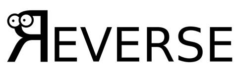
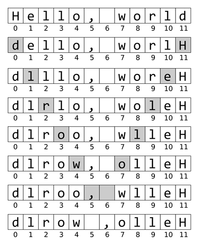

Prev - #35 Title Case | Table of Contents | Next - #37 Change Maker
reverseString('Hello') → 'olleH'

Strings are immutable in the Python language, meaning you can’t
modify their characters the way you can modify the items in a list. For
example, if you tried to change 'Rat' to 'Ram' with the assignment statement 'Rat'[2]
= 'm', you would receive a TypeError: 'str' object
does not support item assignment error message. On the other hand, if
you store a string 'Rat' in a variable named animal, the assignment statement
animal = 'Ram' isn’t modifying the 'Rat' string but rather making animal refer
to an entirely new string, 'Ram'.
We can modify an existing string is to create a list of single-character strings, modify the list, and then create a new string from the list. Enter the following into the interactive shell:
>>> animal = 'Rat'
>>> animal = list(animal)
>>> animal
['R', 'a', 't']
>>> animal[2] = 'm'
>>> animal
['R', 'a', 'm']
>>> animal = ''.join(animal)
>>> animal
'Ram'
We’ll use this technique to reverse the characters in a string.
Exercise Description
Write a reverseString() function with
a text parameter. The function should return a
string with all of text’s characters in reverse
order. For example, reverseString('Hello') returns 'olleH'. The function should not alter the casing of any
letters. And, if text is a blank string, the
function returns a blank string.
These Python assert statements stop
the program if their condition is False. Copy them
to the bottom of your solution program. Your solution is correct if the following
assert statements’ conditions are all True:
assert reverseString('Hello') == 'olleH'
assert reverseString('') == ''
assert reverseString('aaazzz') == 'zzzaaa'
assert reverseString('xxxx') == 'xxxx'
Try to write a solution based on the information in this description. If you still have trouble solving this exercise, read the Solution Design and Special Cases and Gotchas sections for additional hints.
Prerequisite concepts: lists, list(), for loops, range(), len(), integer division, indexes, swapping values, join()
Solution Design
Instead of building up a string from the characters in text in reverse order, let’s make our function first
convert the string in text into a list of
single-character strings. Python’s list() function
does when we pass it a string. For example, list('Hello')
returns the list value ['H', 'e', 'l', 'l', 'o']. We
can assign this list as the new value of text.
Once we have the characters of text in
a list, create a for loop that loops over the first
half of the list’s indexes. This can be calculated from the expression len(text) // 2. We want to replace the character at each
index with the character at the “mirror” index in the second half of the list. The
mirror of the first index is the last index, the mirror of the second index is
the second to last index, the mirror of the third index is the third to last
index, and so on.
To calculate the mirror of an index i
in text, you would want len(text)
- 1 - i. For example, the mirror of index 0
is len(text) - 1 - 0, the mirror of index 1 is len(text) - 1 - 1, the
mirror of index 2 is len(text) -
1 - 2, and so on.
Python’s assignment statement allows you to swap two values simultaneously.
For example, the assignment statement myList[0], myList[5]
= myList[5], myList[0] swaps the values at indexes 0
and 5 in a hypothetical myList
variable.
Figure 36-1 shows the characters of a hypothetical 12-item list
made from 'Hello, world' being swapped until the
string is reversed.

Figure 36-1: The process of reversing a list of single-character strings by swapping their mirror indexes.
Finally, the join() string method
creates a string from the text list with the instruction ''.join(text).
This is the string the reverseString() function
should return.
Special Cases and Gotchas
You may think that you need two different algorithms depending on
if the string to reverse has an odd or even number of characters. However, it
turns out this doesn’t matter. If the text string has
an odd number of characters, like the 5 characters in the list ['H', 'e', 'l', 'l', 'o'], then swapping the middle
character at index 2 with itself doesn’t change the
list.
Now try to write a solution based on the information in the previous sections. If you still have trouble solving this exercise, read the Solution Template section for additional hints.
Solution Template
Try to first write a solution from scratch. But if you have difficulty, you can use the following partial program as a starting place. Copy the following code from https://invpy.com/reversestring-template.py and paste it into your code editor. Replace the underscores with code to make a working program:
def reverseString(text):
# Convert the text string into a list of character strings:
text = ____(text)
# Loop over the first half of indexes in the list:
for i in range(len(____) // ____):
# Swap the values of i and it's mirror index in the second
# half of the list:
mirrorIndex = len(text) - ____ - ____
text[i], text[mirrorIndex] = text[____], text[____]
# Join the list of strings into a single string and return it:
return ''.join(text)
The complete solution for this exercise is given in Appendix A and https://invpy.com/reversestring.py. You can view each step of this program as it runs under a debugger at https://invpy.com/reversestring-debug/.
Prev - #35 Title Case | Table of Contents | Next - #37 Change Maker